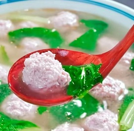

-
1，起锅烧油，炒大盘鸡油要多一点。
2，油温热了放点白砂糖，把花椒粒放进去。
……
2:新疆大盘鸡

-
1，湿面条淋油，抖散，上锅蒸15分钟。
2，加葱、姜、蒜末、干辣椒、八角、十二香炒出香味。
……
3:河南蒸面条

-
食材：
毛肚、鸭血、黄豆芽、豆腐皮、千叶豆腐、午餐肉、火锅底料、干辣椒段、花椒、葱姜蒜、郫县豆瓣。
……
5:毛血旺

-
1，两包黑芝麻糊、两个鸡蛋、一点点牛奶装在油纸里，撒上黑芝麻。
2，空气炸锅160度20分钟。
6:空气炸锅芝麻糊蛋糕

-
1，可可脂70%的黑巧，黑巧克力280g，淡奶油250g小火融化，防止油脂分离。融化好后室温晾凉。
2，准备做卡仕达酱：蛋黄2颗充分搅拌，牛奶150g，玉米淀粉10g开小火不断搅拌至粘稠。
……
7:冰山熔岩巧克力

-
1，排骨冷水下锅，加葱，姜，料酒，焯水去腥。
2，炒糖色（或者老抽），加排骨翻炒均匀。
……
9:小猪盖被（烧排骨）

-
1. 豆皮切方块，开水烫。
2. 葱白切丝，香菜切段，里脊肉切丝。
……
13:酱肉丝

-
1. 首先鸡腿加葱、姜、料酒、少许花椒、几颗黄栀子上色，小火焖煮15分钟。
2. 捞出过冰水口感更劲道，改刀装盘。
……
14:口水鸡

-
1，五花肉切条，切成筷子粗细。
……
15:小酥肉

-
稠面糊：低筋面粉25g，冰水35g，鸡蛋一个。Z字搅拌，防止起筋。
稀面糊：低筋面粉50g，冰水100g。
……
16:炸虾天妇罗

-
1，平菇撕成小条。撒少许盐，腌10分钟。
……
17:炸蘑菇

-
1， 香菇，木耳温水泡发10分钟。肉皮切丁。
……

19:肉丸汤
-
1， 牛腩切块，不要太小。土豆、胡萝卜切成滚刀块
2， 准备调料：大块的葱、姜，八角，香叶，桂皮，干辣椒。
……
21:土豆炖牛肉

-
1， 配料1：牛肉、豆腐切沫。
2， 配料2（可选）：木耳切丝，胡萝卜切细丁，莴笋切沫。
……
22:西湖牛肉羹

-
1，配料：牛肉条加生抽，老抽，黑胡椒，食用油，淀粉，腌制10分钟。青红椒，洋葱切丝。
2，意面开水煮8分钟，过凉水备用。
……
23:黑椒牛柳意面

-
1，配料：2个鸡蛋打散，豆腐切丝，午餐肉切丝。
2，配料（可选）：圆白菜切丝，木耳切丝，金针菇。
……
25:酸辣汤

-
1，配料：粉条泡水，切短，加老抽拌匀。圆白菜切丝。
2，碗汁：酱油，蚝油，白胡椒粉。
……
26:圆白菜肉沫粉条

-
1，配料：牛肉（牛腩）切块，咖喱块，土豆切块，胡萝卜切块，葱姜切沫，洋葱切丝，牛奶。
2，牛腩加葱姜，高压焖煮半小时。
……
27:咖喱牛肉

-
1，配料：猪肉切片，白菜梆斜切片，白菜叶撕碎，豆腐切三角片，蚝油。
2，锅里热油，白菜炒出水分，备用。
……
28:猪肉白菜炖豆腐